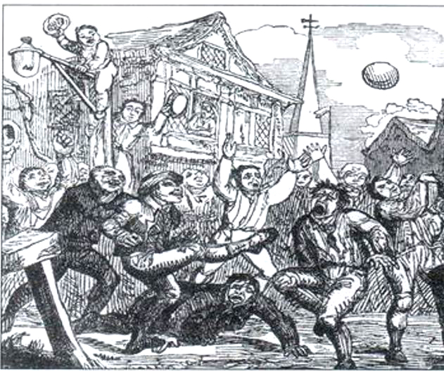

L'histoire du sport :
Le football est un sport collectif née au milieu de XIXième siècle en Grande-Bretagne et il est dévenue le sport collectif le plus populaire un siècle après sa création.Le football trouve ses racine au Moyen Age, il est l'héritié de la soule médiévale qui se pratiqué dans le Nord-Ouest de la France et dans les îles Britaniques.La soule médiévale etait caractérisé par sa violence et sa faible quantité de règles.

Au début du XIXième siècle les écoles anlaise intègrent porgressivement le sport au cursus.Les règles de Cambridge en 1848 sont un tentative d'unification des règles du football.
Les premiers club indépendant apparaissent à la fin des année 1800. En 1863 onze clubs fondent "the Football Association", chargée d'organiser la pratique du foot en Angleterre, c'est cette association qui publie les premières règles du sport, ces dernières sont inspirées par celles de Cambridge.
En 1904 la Fédération intarnational de football association également appelé FIFA est fondée à Paris par 7 pays européens,C'est en 1930 que la FIFA crée la première coupe du monde remportée par l'Uruguay.